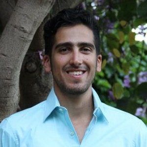

About Us
The Undergraduate Mathematics Students Association is a student group sponsored by the UCLA Mathematics Department. It is open to all people that are interested in mathematics, particularly catering to the UCLA pure and applied mathematics communities.
UMSA focuses on helping undergraduates gain a sense of community among their fellow UCLA math enthusiasts. This is achieved through regular social events, guest speakers, and info sessions. Our organization recognizes the academic concerns of our members, whether it's applying to graduate school, finding a career path, or even choosing the right major. As a group we will do our best to meet these needs, so we appreciate your ideas and feedback!
Officers
2013/2014 Officers
- President: Rodd Talebi
- Year: 5th year
- Major: Applied Mathematics and Astrophysics
- Email: roddtalebi@gmail.com
- Favorite Math Subject: Differential Equations
- Career Plans: Space Research
- Fun Fact about Yourself: I currently row for UCLA’s Rowing Team
- Mentoring Advisor: John Wu
- Major: Applied Mathematics
- Favorite Math Subject: Math 142
- Career Plans: Graduate School in Statistics, Financial Engineering or Scientific Computing
- Fun Fact about Yourself: I worked 18 hours per week as a tutor at a high school that I have never attended during my "actual” senior year of high school.
- Liaison: Lexie Wang
- Year: 3rd
- Major: Applied Math
- Favorite Math Subject: Complex Analysis
- Career Plans: Finance, Consulting
- Secretary: Eric Luc
- Year: 4th
- Major: Mathematics/ Economics
- Favorite Math Subject: Differential Equations
- Career Plans: Finance, Operations research, sports business
- Fun Fact about Yourself: I’m primarily left handed, but I write with my right hand.
- Social Chair: Katya Alkorn
- Year: 4th
- Major: Math/Econ
- Email: katerynaalkorn@ucla.edu
- Favorite Math Subject: 115A
- Career Plans: Not sure yet, thinking about either grad school for math or MBA
- Co-Publicist: Yvonne Wei
- Year: 2nd
- Major: Mathematical Economics
- Favorite Math Subject: Linear Algebra
- Career Plans: Financial Engineering
- Fun Fact about Yourself: I’ve written in a journal every day since the 8th grade!
- Co-Publicist: Sophie Wang
- Year:2rd year
- Major: Math with Applied Science - Actuarial
- Favorite Math Subject: Probability
- Career Plans: Graduate school or be an actuary
- Fun Fact about Yourself: I design background stage for a student drama club and I create APPs for UCLA Chinese students and other student groups.
- Web Designer: Roger Lam
- Year: 4th
- Major: Math of Computation
- Email: mrlamroger@ucla.edu
- Favorite Math Subject: Mathematical Cryptography
- Career Plans: Software Development, primarily interested in Hadoop
- Fun Fact about Yourself: I love chicken nuggets and board games. Particularly Late Night, Risk and Settlers of Catan.
Not Pictured
Treasurer: Jason